Animaze Desktop: How can I import my own 3D avatar in the app?
The following import process can be used for 3D and hybrid avatars.
Open the Animaze Editor, navigate to Assets and select Import 3D Object.
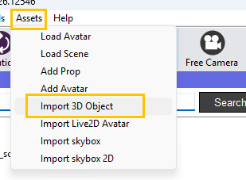
Open the model's geometry file, the .fbx file, from the location you downloaded the files.
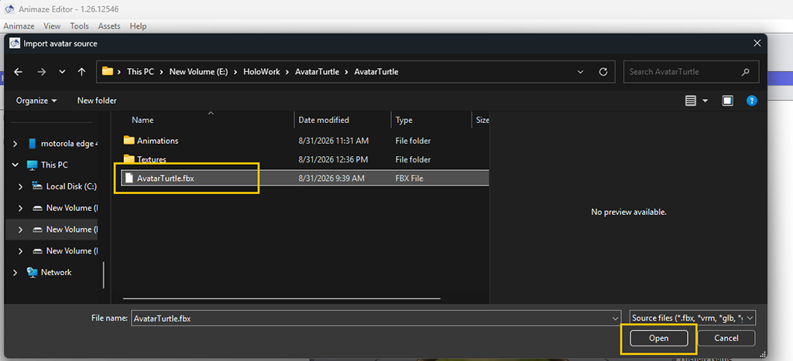
The following window prompts you to select the files you want to import. If this is your first time importing a specific model, make sure all the files are marked and select the item type from the dropdown list before clicking Import.
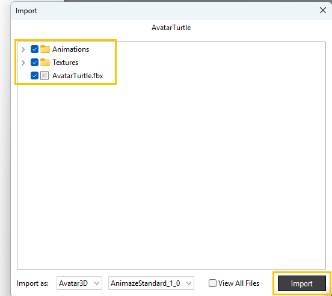
A report of Import Issues will be displayed after the Animaze Editor checks the files for issues. The warning system checks for skeletal animations. The Required animation not found will be displayed when the corresponding skeletal animation is not found in the source files. This warning will trigger even if there is a valid Blendshape that fills the role of the missing skeletal animation. When using blendshapes instead of animations, that warning message can be ignored, like in this case. Click X to dismiss the window.
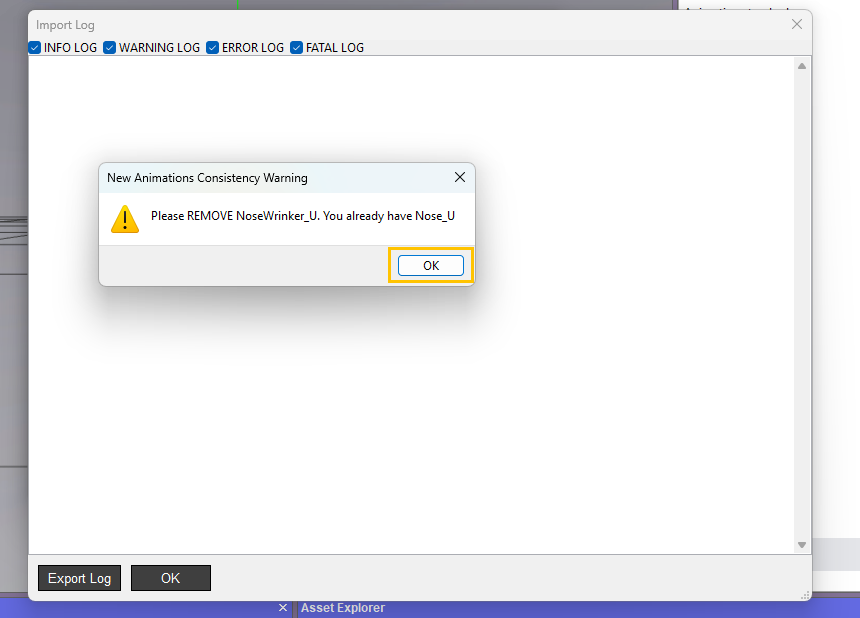
Next there's a verbose log that gets prompted for every import, hit the Ok button to dismiss it. As you work on more complicated models, these logs will surface errors and help you with debugging.
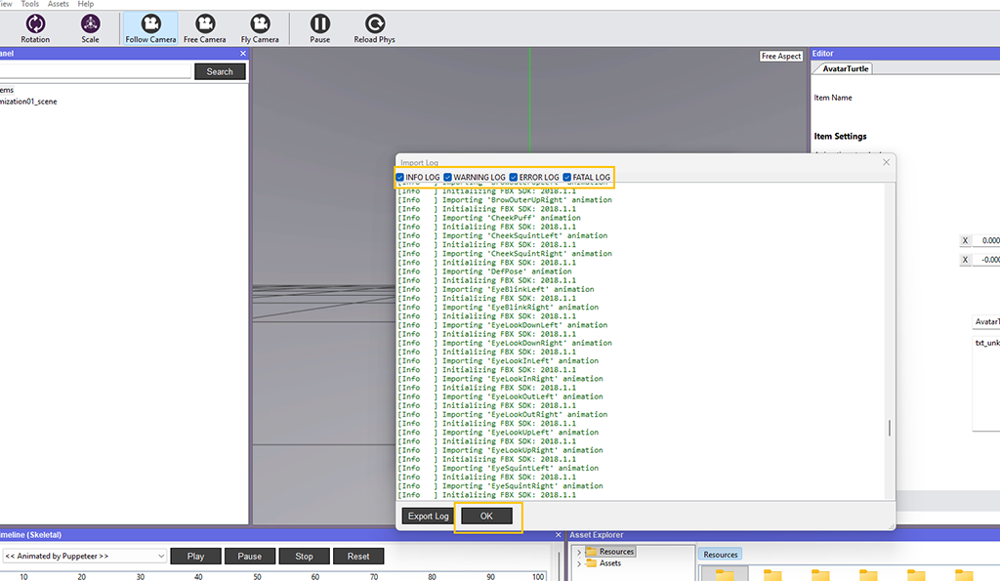
Once the avatar is imported, it will be visible in the Viewport. Click on it in the Hierarchy Panel to display its details (icon, type, name, position etc) in the Editor Panel (right side).
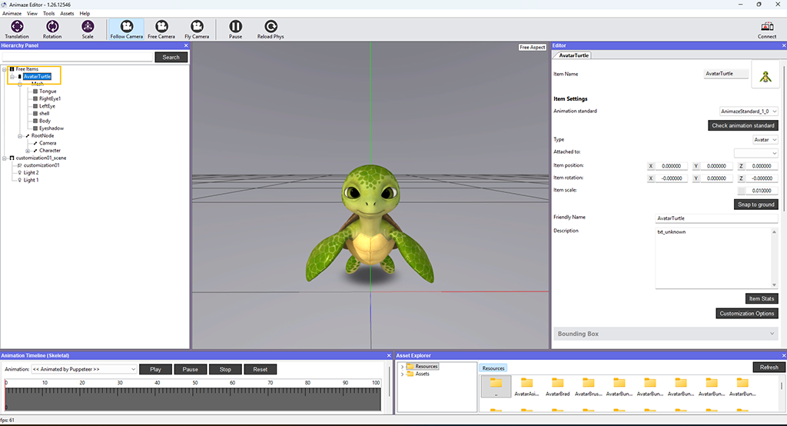
Save item in the Hierarchy Panel as a final step.
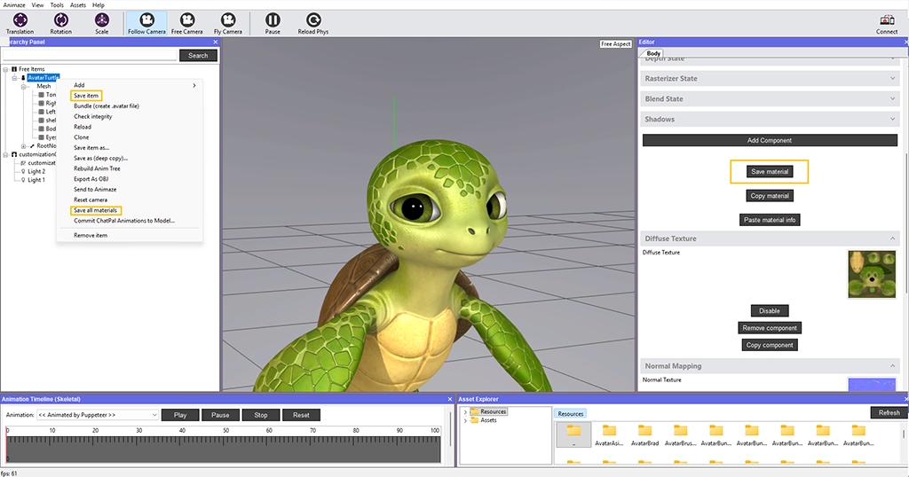
Check out all the things you can do with your avatar in the dedicated section in our documentation.
Once you’ve finished playing around with the Editor’s settings, you can move on to bundling your avatar, to get it ready for the Animaze app.
To do so, turn to the Hierarchy Panel to the left and right click on the avatar’s name and choose Bundle.
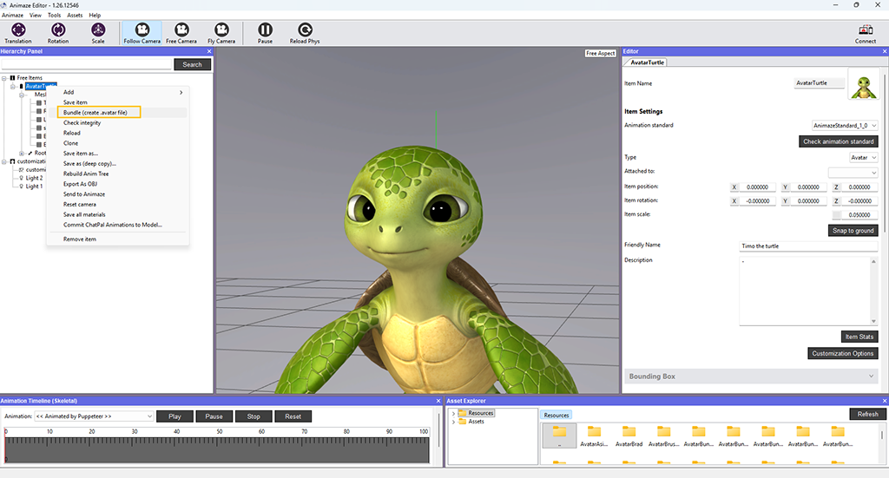
A new window will prompt you to save the changes, if any, made to the avatar prior to bundling it.
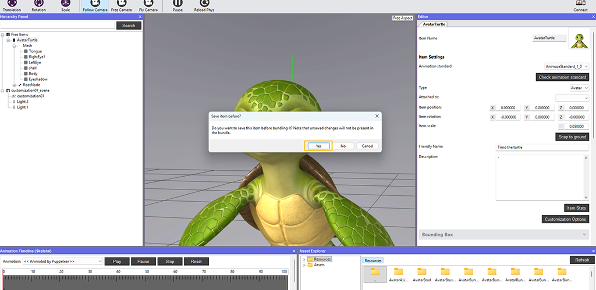
Select the folder you want to export the bundle in. By default, the system will put it in the Resource directory of the editor, but you can change this at any time. Once you decide, click Select Folder.
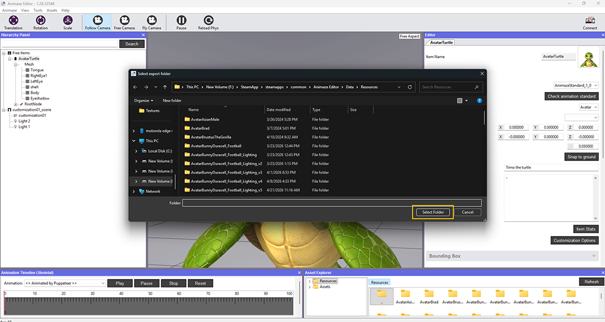
The system notifies the completion of the bundling process. Click OK.
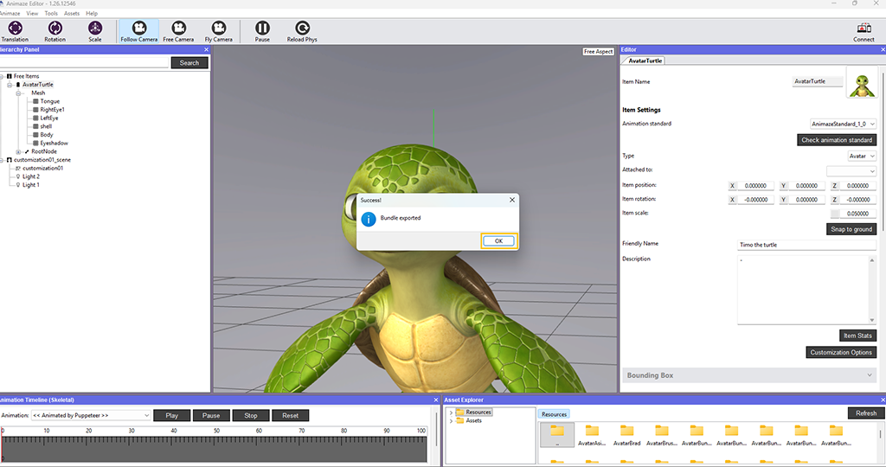
Now you can import the bundle in the Animaze desktop application.
Open Animaze, then drag and drop the bundle from its location into Animaze.
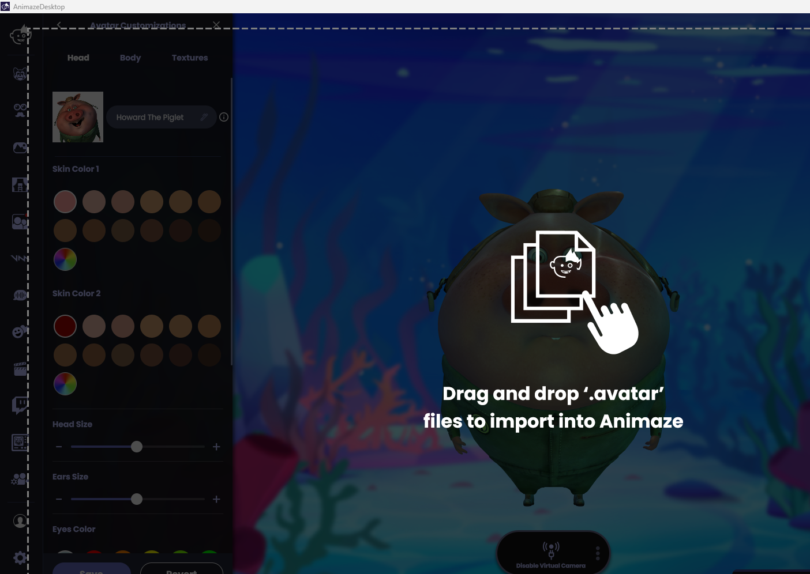
The imported bundle is in the Avatar Gallery, in the Imports tab.